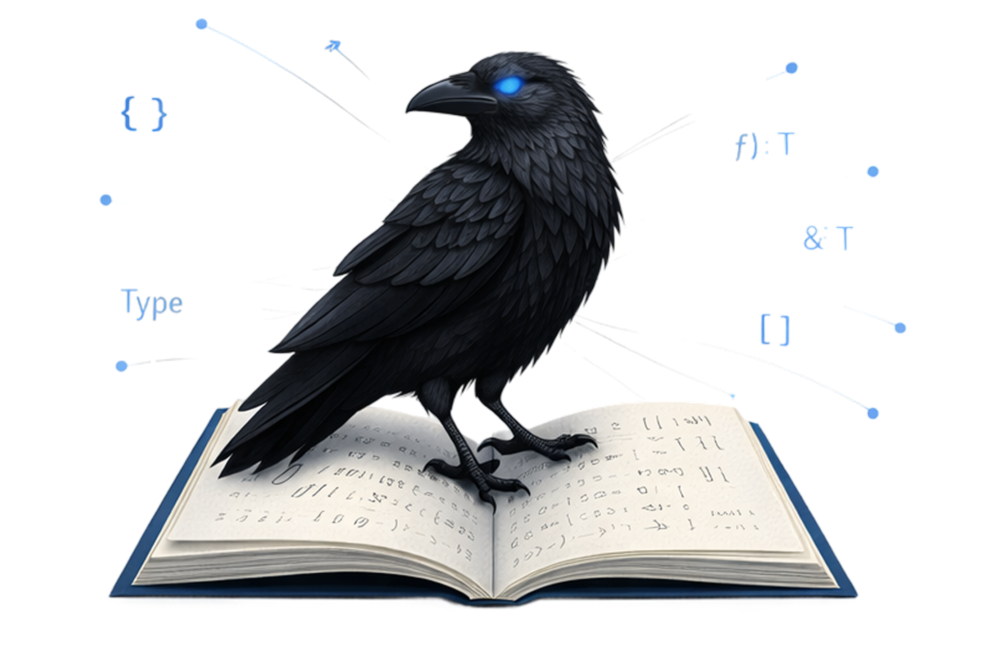

Compiler-precise code intelligence for Scala, built in Rust.
I work across many domains and products at work — codebases I don't have deep knowledge about. The usual workflow: figure out how to set something up, realize I don't know how, go find the engineer who owns that domain and ask them. That's friction.
I built kodex so that Claude Code can answer those questions instead. It traces through the compiled codebase and gives me a precise answer.
Compile SemanticDB data
./mill __.semanticDbData
Also works with sbt and scala-cli — kodex knows how to set those up too. I encourage you to run the compile yourself so you stay in control of the build.
Install the Claude Code plugin
/plugin marketplace add nguyenyou/kodex /plugin install kodex@kodex-marketplace
Ask away
use kodex to explore how authentication works in this codebase
A server runs daily/weekly to clone the production codebase, compile SemanticDB, and let an AI agent generate product specs. Specs stay in sync with actual code — generated from code, not the other way around.
Keep two clones of the production codebase: a read-only clone compiled with SemanticDB for understanding, and a working clone where you write code. Your index stays stable.
| scalex | kodex | |
|---|---|---|
| Setup cost | None — instant on any Scala codebase | Requires a full compile |
| Accuracy | Best-effort (unresolved implicits, overloads) | Compiler-precise — every symbol resolved |
| First query | Seconds | Minutes (compile time) |
| Best for | Quick exploration, reading unfamiliar code | Deep understanding, production codebases |
I use both. scalex is my default for open source projects and libraries — no setup, instant answers. Opus 4.6 is good enough at reasoning that AST + source code alone is more than enough to explain how a project works. kodex is for production codebases where I already compile the code for work, so the cost is paid and I want compiler-precise accuracy.